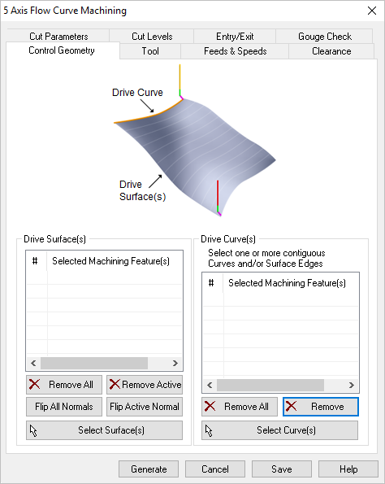
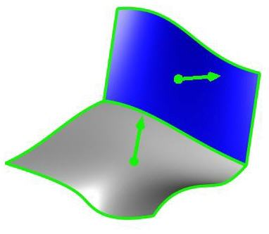
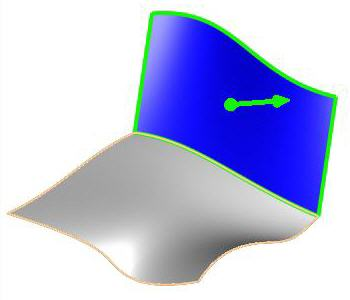

5 Axis Flow Curve operations require you to select Drive Surfaces and Drive Curves as control geometry. See Control Geometry for more information regarding feature/regions.
Drive surfaces are the model geometry which is used for tool path generation; it is the surface you want to work on and defines the shape to be milled. You can select multi surfaces. Drive surfaces determine the tool location and tool axis in some cases. |
Drive curves are used to control the cutter locations. Here you select one or more curves as drive curves and the tool will follow the curve and these curves will be projected onto the Drive surfaces. The tool positions will then be modified according to gouge checking on the part surfaces. |
 Dialog Box: Machining Features tab, 5 Axis Flow Curve Operations |
In this section of the Machining Features tab, you select one or more drive curves. •Select Curves(s)
•Remove All •Remove Active |
, highlighted")
This section on the Machining Features tab, allows you to select the surfaces which act as drive surfaces. •Select Surface(s)
Remove All Removes all Selected Surfaces from the Selected Machining Feature(s) list. Remove Active This allows you to remove a region from the selection list. You need to select a region from the list of Selected Machining Feature(s) and click Remove Active or press the delete key on the keyboard. Surface Normals Tool path orientation is determined by surface normal direction. So if you have generated the tool path on the wrong side you can simply change the surface normal by flipping the surface normal and regenerate your tool path again. The surface normal for each surface is represented by a green arrow on the surface.  Surface Normals Flip All This flips the surface normals of all surfaces selected as Machining Features. Flip Active This flips the surface normal of the selected surface under Machining Region.  Flip Active Normal |